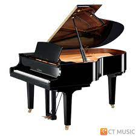

|  | เปียโน (ย่อมาจาก เปียโนฟอร์เต) เป็นเครื่องดนตรีที่บรรเลงโดยการกดลิ่มนิ้ว (คีย์บอร์ด)[1] มักใช้นิยมบรรเลงเพลงแนว คลาสสิก และ แจ๊ส แม้ว่าเปียโนจะมีขนาดใหญ่และหนักทำให้ไม่สามารถพกพาได้ และมีราคาค่อนข้างแพง แต่เปียโนก็เป็นเครื่องดนตรีที่ได้เปรียบเครื่องดนตรีมากมาย เสียงของเปียโนสามารถเข้ากับเครื่องดนตรีเกือบทุกชนิด ดังนั้นเปียโนจึงสามารถเล่นได้ทั้งแบบบรรเลงเดี่ยว, แชมเบอร์, คลอเสียง หรือแม้กระทั่งร่วมกับวง ออร์เคสตรา |